Real deals. Real results.
We don't just talk about speed and certainty — here's the evidence. Every case study is a real deal with real numbers, showing exactly how we helped where others couldn't.
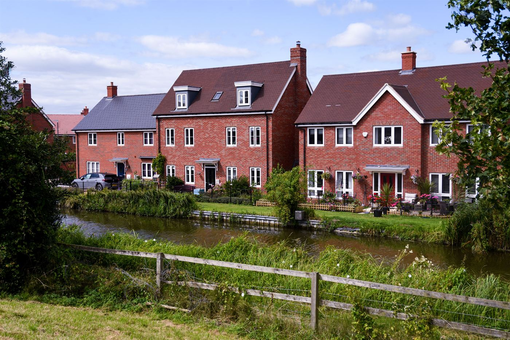
£130,000 Against a Director's Main Residence. No Surveyor Visit.
Ltd company borrower, third-party first charge on the director's home. Desktop valuation, 23.3% gross LTV, 12 months retained interest.
A limited company needed to release capital for business use. The only available security was the director's personal main residence in Palmers Green, N13. AF Credit structured a third-party first charge with a desktop valuation — no surveyor visit, no monthly payments, 12-month term to arrange refinance.
Read the case study →
Three Below-Market Apartments. No Valuations. No Delay.
Five-property portfolio used as security. 61.8% gross LTV, £0 valuation cost, 12-month term. Purchase completed before the opportunity was lost.
Three apartments purchased at £60,000 each — well below market value. Two existing short-term let properties offered as additional security. AF Credit assessed all five properties without a single site visit, completing a portfolio-backed bridging loan at 61.8% gross LTV.
Read the case study →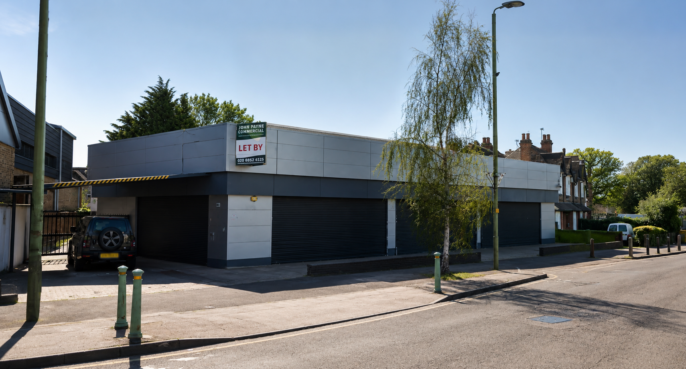
£620,000 Against a Commercial Showroom. No New Valuation Required.
Existing evidence, internal assessment, 44% LTV. Borrower completed a residential purchase before the opportunity was lost.
Commercial vehicle showroom, 7,395 sq ft, Mottingham. New 15-year lease, £121,000 annual rent, 14-month rental guarantee. AF Credit assessed internally — no new survey, no delay. Borrower secured a residential investment in Chigwell against the clock.
Read the case study →£210,000 HMO Bridging Loan. Two-Bed to Five-Bed Conversion.
Former local authority house, Cambridge. 57.8% LTV, £550k GDV, £51k estimated annual rent. Mainstream lenders declined.
Experienced property company converting a 2-bed former council house into a 5-bedroom HMO. Full conversion — 4 bathrooms, ensuite kitchenettes, garage extension. Mainstream lenders declined. AF Credit structured the refurbishment bridge at 57.8% LTV with a clear refinance or sale exit.
Read the case study →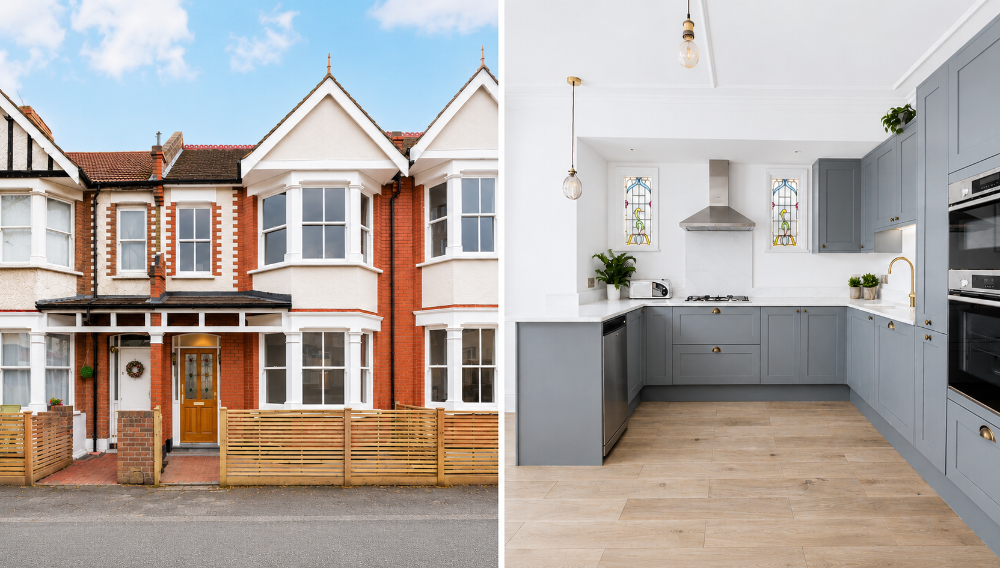
Bridge Expiring. Buyer Renegotiating. Default Interest Looming.
Penge refurbishment flip under offer. AF Credit provided a £485,000 no valuation bridging loan — desktop valuation only, default interest avoided.
Bought £475k, refurb £150k, sold £825k — £200k gross profit. But the sale didn't complete in time. AF Credit refinanced the existing bridge at 65% LTV with desktop valuation only, avoiding default interest. Contractor restriction resolved via solicitor undertaking.
Read the case study →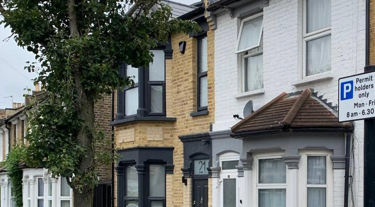
Existing Lender Refused to Extend. Completed in 10 Days.
Refurbished East London residence. Rebridge at full post-works value — no survey, no searches, hard deadline met.
Existing bridging lender refused to extend with a hard deadline looming. AF Credit rebridged at full post-works value — no valuation, no-search indemnity, completed in 10 working days.
Read the case study →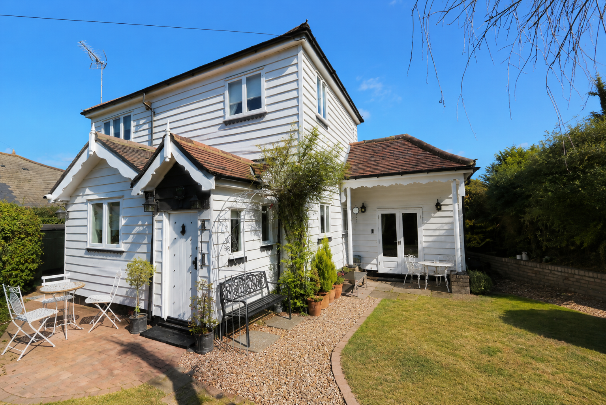
First-Time Buyer. Non-Standard Construction. Completed in 15 Days.
Detached cottage, gifted equity deposit, desktop valuation only. AF Credit completed where standard lenders declined.
First-time buyer, non-standard construction cottage, gifted equity from family. Standard lenders declined. AF Credit structured a desktop valuation bridging loan at 57.8% LTV — purchase completed in 15 days with a clear refinance exit.
Read the case study →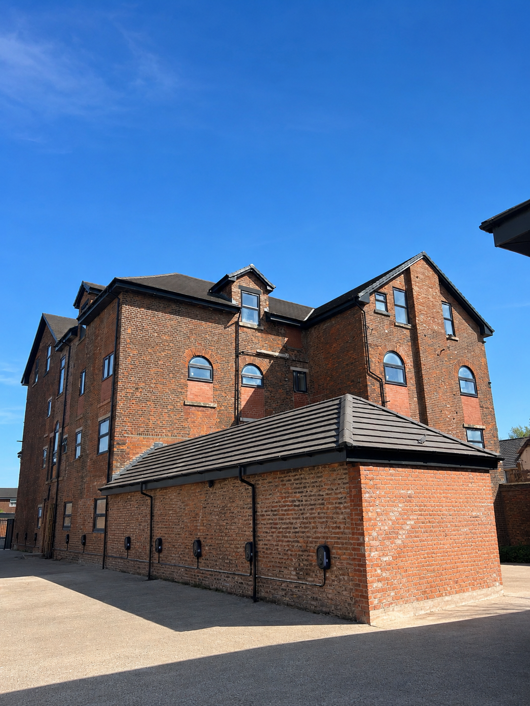
Multiple Lenders Declined. AF Credit Completed.
21-unit commercial-to-residential conversion. No valuation, no build warranty at drawdown, second fix stage.
Developer needed capital to complete second fix on a 21-unit Manchester conversion. Multiple lenders declined due to build stage, no warranty and no valuation. AF Credit structured a £325,000 facility at 35% LTV against the £3.9m GDV.
Read the case study →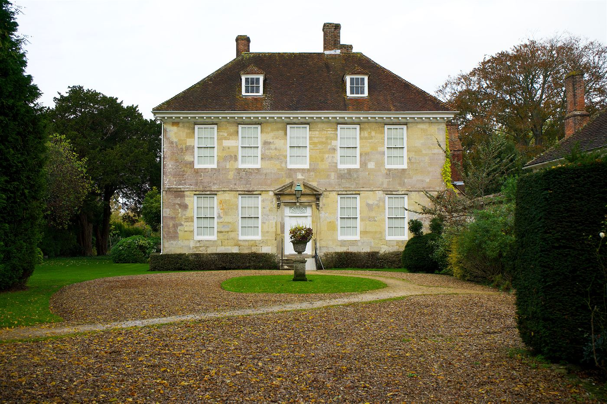
£1,000,000 Raised. No New Valuation Required.
Prime gated Surrey residence. Existing RICS report audited and accepted — no surveyor instructed, no valuation fees, no delays.
An experienced developer needed rapid capital to fund a time-sensitive London commercial opportunity. A two-year-old RICS report was already on file. AF Credit audited it, accepted it, and completed — without instructing a single surveyor.
Read the case study →Two CCJs. Mortgage Declined. Completed in 18 Days.
Two satisfied CCJs, historic arrears, high-street lender declined. AF Credit completed at 50% LTV in 18 days with a BTL refinance exit.
Harborne, Birmingham semi-detached. Two satisfied CCJs (3–4 years old) plus historic mortgage arrears. High-street BTL lender declined. AF Credit provided a 12-month bridge at 50% LTV — exit planned for BTL refinance as CCJs aged past the 4-year threshold.
Read the case study →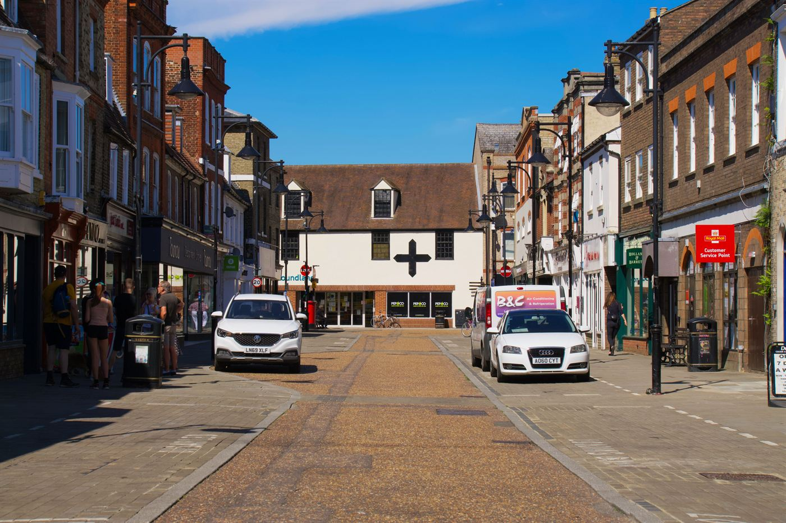
Semi-Commercial Auction. Completed 6 Days Inside the Deadline.
Shop with flat above, Coventry. 57.8% blended LTV. Specialist RICS blended valuation. 22 days from enquiry to completion.
Shop with tenanted flat above, purchased at auction in Coventry for £450,000. 28-day completion window. Specialist RICS blended valuation. AF Credit completed in 22 days — 6 days inside the deadline — with a semi-commercial investment mortgage refinance exit.
Read the case study →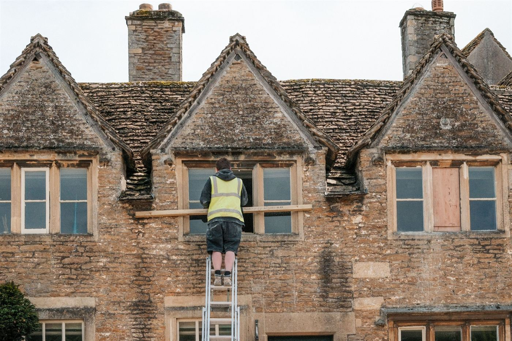
£38,000 Refurbishment. GDV £290,000. Sold at £289,500.
Victorian mid-terrace, Beeston. 75% LTV, 9-month term, 14 days to complete. Capital fully recycled.
Victorian mid-terrace purchased for £205,000 in Beeston, Nottingham. £38,000 refurbishment — kitchen, bathroom, rewiring, windows. GDV £290,000–£300,000. Sold at £289,500. Bridge completed in 14 days; investor's capital fully recycled.
Read the case study →Inheritance Tax Due. Probate Not Yet Granted. 12 Days.
Sole executor, £190,000 IHT liability, desktop valuation at 32% LTV. AF Credit unlocked the estate in 12 days.
Detached 4-bedroom house, Sherborne, Dorset valued at £875,000. Executor needed £190,000 to pay HMRC before probate granted. Property unsellable until grant issued. AF Credit completed at 32% LTV using desktop valuation in 12 days. Sold at £862,000 post-probate.
Read the case study →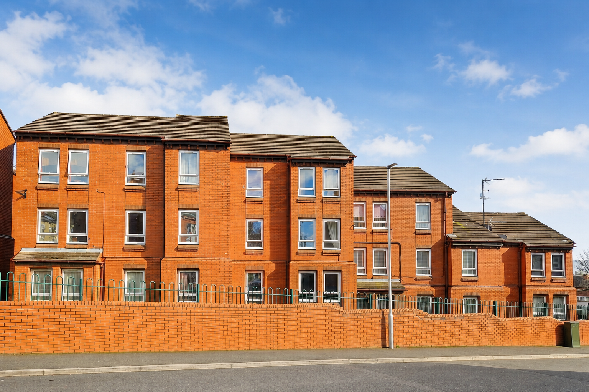
Mortgage Lender Withdrew Day 14. Completed Day 21.
Original BTL mortgage lender cited property condition on day 14 of 28. AF Credit stepped in at 75% LTV and completed in 7 days.
End-of-terrace, Wolverhampton, purchased at auction for £118,000. BTL lender withdrew on day 14 citing condition (no kitchen, boiler requiring replacement). AF Credit has no minimum condition standard — stepped in at 75% LTV and completed in 7 working days.
Read the case study →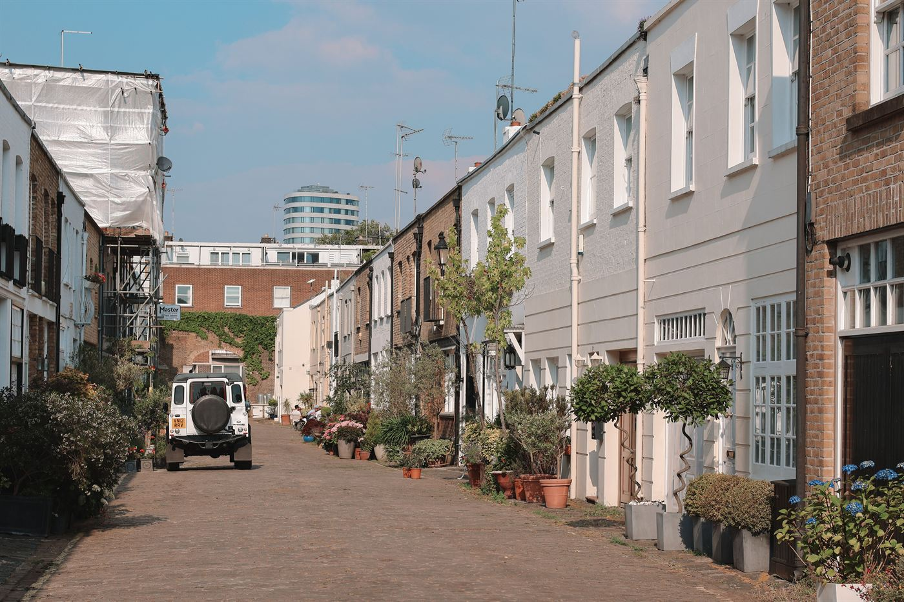
Buyer Pulled Out Day Before Exchange. Completed in 5 Days.
Chain break, Redland Bristol flat. AVM valuation, no-search indemnity, 60% LTV. Onward purchase preserved.
Vendor's buyer withdrew 24 hours before exchange. Onward purchase at risk. AVM valuation (same day, £0) plus no-search indemnity removed the two longest delays. £207,000 at 60% LTV completed in 5 working days. Flat re-sold at £350,000 nine weeks later.
Read the case study →10 Days Left. Completed in 9.
First-time BTL investor's deposit rescued after original lender withdrew 18 days in.
Savills auction purchase — original lender pulled out with the deadline looming. AVM valuation, gifted deposit cleared, dual rep legals. Completed one day inside the extended deadline.
Read the case study →